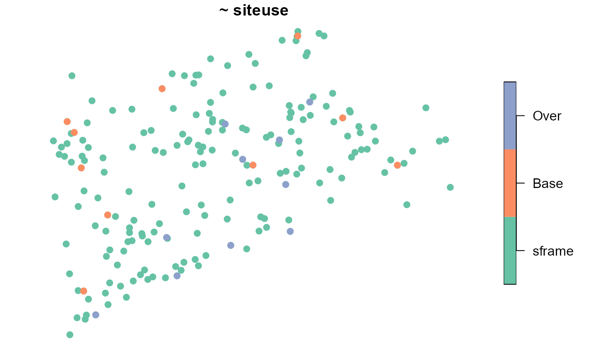
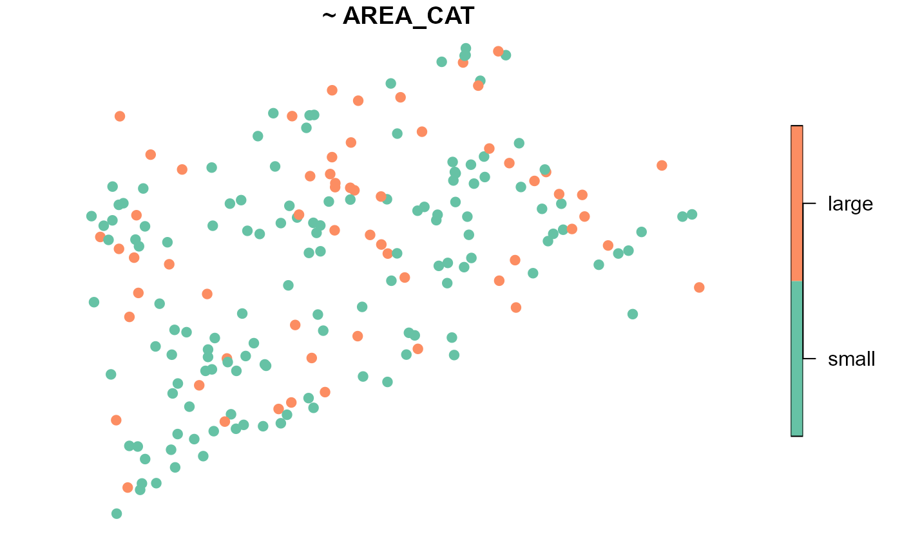
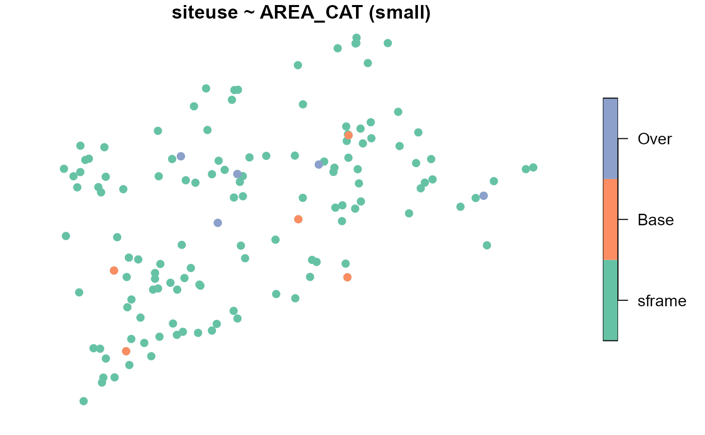
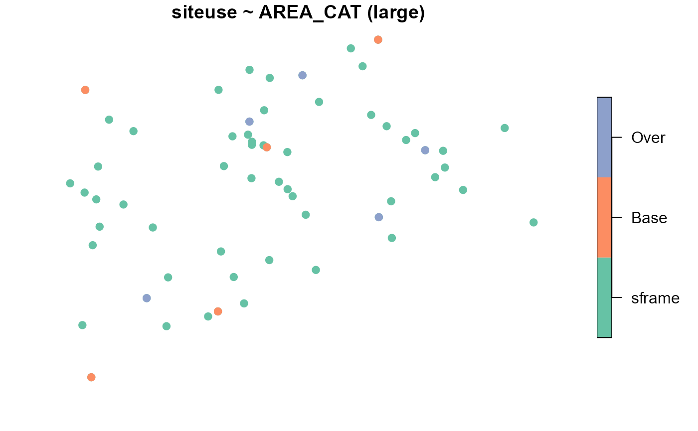

vignettes/articles/weighting.Rmd
weighting.RmdIf you have yet not read the “Start Here” vignette, please do so by running
vignette("start-here", "spsurvey")An important part of a statistical survey design is constructing design weights that are representative of the target population (i.e., population of interest). Appropriate design weights are combined with data collected in the field to estimate population parameters like means and totals. At the start of a survey design, weights at a site typically equal the reciprocal of the site’s inclusion probability (i.e., the probability the site was selected from the sampling frame as part of the random sample). Thus, these weights characterize how many “similar units” the site represents in the target population. An important property of these weights is that they generally sum to \(N\), the known population size (more rigorously, the sampling frame size). However, these initial weights are often adjusted prior to analysis, for myriad reasons that include a change to the survey design (i.e., the sample size changed partway through the survey, nonresponse, and/or to improve the performance of statistical estimators). Here we outline some strategies for weight adjustments using a few practical examples that reflect common ecological applications. For an introduction to survey design and weighting, see Lumley (2011) and Lohr (2021); for a more technical treatment, see Särndal et al. (2003).
Before proceeding, we load spsurvey and set a
reproducible seed by running
The NE_Lakes data contains a population of 195 lakes in
the Northeast United States (US):
NE_Lakes
#> Simple feature collection with 195 features and 4 fields
#> Geometry type: POINT
#> Dimension: XY
#> Bounding box: xmin: 1834001 ymin: 2225021 xmax: 2127632 ymax: 2449985
#> Projected CRS: NAD83 / Conus Albers
#> First 10 features:
#> AREA AREA_CAT ELEV ELEV_CAT geometry
#> 1 10.648825 large 264.69 high POINT (1930929 2417191)
#> 2 2.504606 small 557.63 high POINT (1849399 2375085)
#> 3 3.979199 small 28.79 low POINT (2017323 2393723)
#> 4 1.645657 small 212.60 high POINT (1874135 2313865)
#> 5 7.489052 small 239.67 high POINT (1922712 2392868)
#> 6 86.533725 large 195.37 high POINT (1977163 2350744)
#> 7 1.926996 small 158.96 high POINT (1852292 2257784)
#> 8 6.514217 small 29.26 low POINT (1874421 2247388)
#> 9 3.100221 small 204.62 high POINT (1933352 2368181)
#> 10 1.868094 small 78.77 low POINT (1892582 2364213)We can visualize the layout of these lakes:
Throughout, we will select both unstratified and stratified samples
from the NE_Lakes data and show how weights are constructed
and adjusted, step-by-step. We assume the sampling frame and target
population are the same, though we eventually relax this assumption to
accommodate overcoverage, which occurs when the target population is
actually a subset of the sampling frame.
Suppose our goal is to use a spatially balanced random sample of 10
sites from NE_Lakes to estimate the proportion of all 195
lakes in “Good” benthic macroinvertebrate condition. To accomplish this
goal, we must sample 10 lakes and determine whether the lake is in good
condition, assign weights to each of the 10 sampled lakes, and combine
the weights with the data to estimate this proportion for all lakes.
Ideally, we would select a sample of size 10 and each of these lakes
could be sampled. In practice, however, there are many scenarios where
field crews cannot sample a site, a few of which include:
If it is expected that some sites cannot be sampled, it is useful to
select an “oversample” of sites that act as replacement sites to the
“base” sample. Here, we select a base sample of size 10 with an
oversample of size 10 from NE_Lakes:
samp <- grts(NE_Lakes, n_base = 10, n_over = 10)We may visualize the spatial distribution of sites alongside the
NE_Lakes population:
plot(samp, sframe = NE_Lakes, pch = 19)
Each site has probability 10/195 of being included in the sample, which implies that each base site is assigned a weight of 195/10, or 19.5
samp$sites_base[, c("siteID", "siteuse", "wgt")]
#> Simple feature collection with 10 features and 3 fields
#> Geometry type: POINT
#> Dimension: XY
#> Bounding box: xmin: 1844177 ymin: 2257478 xmax: 2088529 ymax: 2446688
#> Projected CRS: NAD83 / Conus Albers
#> siteID siteuse wgt geometry
#> 1 Site-01 Base 19.5 POINT (1854595 2348778)
#> 2 Site-02 Base 19.5 POINT (1914389 2407526)
#> 3 Site-03 Base 19.5 POINT (2014745 2446688)
#> 4 Site-04 Base 19.5 POINT (1856350 2257478)
#> 5 Site-05 Base 19.5 POINT (1849399 2375085)
#> 6 Site-06 Base 19.5 POINT (1981644 2350859)
#> 7 Site-07 Base 19.5 POINT (2088529 2350777)
#> 8 Site-08 Base 19.5 POINT (1874135 2313865)
#> 9 Site-09 Base 19.5 POINT (1844177 2383131)
#> 10 Site-10 Base 19.5 POINT (2048021 2385862)The sum of these weights equals 195, the known population size:
sum(samp$sites_base$wgt)
#> [1] 195The base and oversample sites are combined into a single
sf object using sp_rbind():
sites_unstrat <- sp_rbind(samp)Suppose that field crews determined that first four sites were
sampleable, the fifth site was inaccessible, and so on. We store the
evaluation status of each site in a variable called
EVAL_CAT, short for evaluation category:
sites_unstrat$EVAL_CAT <- c(
rep("Sampleable", 4),
"Lack_Permission",
rep("Sampleable", 2),
rep("Inaccessible", 2),
"Sampleable",
rep("Lack_Permission", 2),
"Endangered",
rep("Sampleable", 2),
"Lack_Permission",
"Sampleable",
rep("Not_Needed", 3)
)
print(sites_unstrat[, c("siteID", "siteuse", "EVAL_CAT")], n = 20)
#> Simple feature collection with 20 features and 3 fields
#> Geometry type: POINT
#> Dimension: XY
#> Bounding box: xmin: 1844177 ymin: 2239763 xmax: 2088529 ymax: 2446688
#> Projected CRS: NAD83 / Conus Albers
#> siteID siteuse EVAL_CAT geometry
#> 1 Site-01 Base Sampleable POINT (1854595 2348778)
#> 2 Site-02 Base Sampleable POINT (1914389 2407526)
#> 3 Site-03 Base Sampleable POINT (2014745 2446688)
#> 4 Site-04 Base Sampleable POINT (1856350 2257478)
#> 5 Site-05 Base Lack_Permission POINT (1849399 2375085)
#> 6 Site-06 Base Sampleable POINT (1981644 2350859)
#> 7 Site-07 Base Sampleable POINT (2088529 2350777)
#> 8 Site-08 Base Inaccessible POINT (1874135 2313865)
#> 9 Site-09 Base Inaccessible POINT (1844177 2383131)
#> 10 Site-10 Base Sampleable POINT (2048021 2385862)
#> 11 Site-11 Over Lack_Permission POINT (2009223 2301696)
#> 12 Site-12 Over Lack_Permission POINT (1925479 2268716)
#> 13 Site-13 Over Endangered POINT (1974036 2355133)
#> 14 Site-14 Over Sampleable POINT (2001212 2369527)
#> 15 Site-15 Over Sampleable POINT (2005879 2336463)
#> 16 Site-16 Over Lack_Permission POINT (1965198 2291328)
#> 17 Site-17 Over Sampleable POINT (1961036 2381322)
#> 18 Site-18 Over Not_Needed POINT (2023662 2397647)
#> 19 Site-19 Over Not_Needed POINT (1865304 2239763)
#> 20 Site-20 Over Not_Needed POINT (1917742 2297169)
table(sites_unstrat$EVAL_CAT)
#>
#> Endangered Inaccessible Lack_Permission Not_Needed Sampleable
#> 1 2 4 3 10In this example, 17 total sites were evaluated. In between the first
and tenth sampled site, seven sites were not sampleable (inaccessible,
lacking permission, endangered species). Sites should always be
evaluated in siteID order, as this is important to maximize
spatial balance of the sampled sites when n_base and
n_over are both used. Because the goal of 10 sampleable
sites was reached after evaluating 17 sites, the final three oversample
sites are not needed and can be removed:
sites_unstrat <- sites_unstrat[sites_unstrat$EVAL_CAT != "Not_Needed", ]
print(sites_unstrat[, c("siteID", "siteuse", "EVAL_CAT")], n = 17)
#> Simple feature collection with 17 features and 3 fields
#> Geometry type: POINT
#> Dimension: XY
#> Bounding box: xmin: 1844177 ymin: 2257478 xmax: 2088529 ymax: 2446688
#> Projected CRS: NAD83 / Conus Albers
#> siteID siteuse EVAL_CAT geometry
#> 1 Site-01 Base Sampleable POINT (1854595 2348778)
#> 2 Site-02 Base Sampleable POINT (1914389 2407526)
#> 3 Site-03 Base Sampleable POINT (2014745 2446688)
#> 4 Site-04 Base Sampleable POINT (1856350 2257478)
#> 5 Site-05 Base Lack_Permission POINT (1849399 2375085)
#> 6 Site-06 Base Sampleable POINT (1981644 2350859)
#> 7 Site-07 Base Sampleable POINT (2088529 2350777)
#> 8 Site-08 Base Inaccessible POINT (1874135 2313865)
#> 9 Site-09 Base Inaccessible POINT (1844177 2383131)
#> 10 Site-10 Base Sampleable POINT (2048021 2385862)
#> 11 Site-11 Over Lack_Permission POINT (2009223 2301696)
#> 12 Site-12 Over Lack_Permission POINT (1925479 2268716)
#> 13 Site-13 Over Endangered POINT (1974036 2355133)
#> 14 Site-14 Over Sampleable POINT (2001212 2369527)
#> 15 Site-15 Over Sampleable POINT (2005879 2336463)
#> 16 Site-16 Over Lack_Permission POINT (1965198 2291328)
#> 17 Site-17 Over Sampleable POINT (1961036 2381322)Recall our primary goal is to estimate the proportion of lakes in
good BMI condition. However, a secondary goal may be to estimate the
proportion of lakes that are able to be sampled. To accomplish this
goal, we must first adjust our original weights to reflect the fact that
17 sites were evaluated. These adjusted weights must still sum to 195,
the population size, and they still must be equal (as all sites had the
same probability of being included in the sample). This implies that
each weight is 195/17, or 11.47. The original weights are adjusted by a
scaling factor that represents the ratio of the original sample size to
the number of evaluated sites, or 10/17. This type of weight adjustment
is available in spsurvey using the adjwgt()
function:
sites_unstrat$adjwgt <- adjwgt(
wgt = sites_unstrat$wgt,
framesize = 195
)
print(sites_unstrat[, c("siteID", "siteuse", "EVAL_CAT", "adjwgt")], n = 17)
#> Simple feature collection with 17 features and 4 fields
#> Geometry type: POINT
#> Dimension: XY
#> Bounding box: xmin: 1844177 ymin: 2257478 xmax: 2088529 ymax: 2446688
#> Projected CRS: NAD83 / Conus Albers
#> siteID siteuse EVAL_CAT adjwgt geometry
#> 1 Site-01 Base Sampleable 11.47059 POINT (1854595 2348778)
#> 2 Site-02 Base Sampleable 11.47059 POINT (1914389 2407526)
#> 3 Site-03 Base Sampleable 11.47059 POINT (2014745 2446688)
#> 4 Site-04 Base Sampleable 11.47059 POINT (1856350 2257478)
#> 5 Site-05 Base Lack_Permission 11.47059 POINT (1849399 2375085)
#> 6 Site-06 Base Sampleable 11.47059 POINT (1981644 2350859)
#> 7 Site-07 Base Sampleable 11.47059 POINT (2088529 2350777)
#> 8 Site-08 Base Inaccessible 11.47059 POINT (1874135 2313865)
#> 9 Site-09 Base Inaccessible 11.47059 POINT (1844177 2383131)
#> 10 Site-10 Base Sampleable 11.47059 POINT (2048021 2385862)
#> 11 Site-11 Over Lack_Permission 11.47059 POINT (2009223 2301696)
#> 12 Site-12 Over Lack_Permission 11.47059 POINT (1925479 2268716)
#> 13 Site-13 Over Endangered 11.47059 POINT (1974036 2355133)
#> 14 Site-14 Over Sampleable 11.47059 POINT (2001212 2369527)
#> 15 Site-15 Over Sampleable 11.47059 POINT (2005879 2336463)
#> 16 Site-16 Over Lack_Permission 11.47059 POINT (1965198 2291328)
#> 17 Site-17 Over Sampleable 11.47059 POINT (1961036 2381322)The first argument, wgt, is the vector of weights, and
the second argument, framesize is \(N\), the known population size. The sum of
these adjusted weights equals 195:
sum(sites_unstrat$adjwgt)
#> [1] 195Then we could use these weights to estimate the proportion of the population that is sampleable or not sampleable due to endangered species, inaccessibility, or a lack of landowner permission:
out <- cat_analysis(sites_unstrat, vars = "EVAL_CAT", weight = "adjwgt")
out[, c("Indicator", "Category", "nResp", "Estimate.P", "StdError.P")]
#> Indicator Category nResp Estimate.P StdError.P
#> 1 EVAL_CAT Endangered 1 5.882353 4.952669
#> 2 EVAL_CAT Inaccessible 2 11.764706 6.861383
#> 3 EVAL_CAT Lack_Permission 4 23.529412 7.869084
#> 4 EVAL_CAT Sampleable 10 58.823529 9.744101
#> 5 EVAL_CAT Total 17 100.000000 0.000000Though some sites could not be sampled, we still presume these sites
are in the target population and are either in “Good” or “Not Good” BMI
condition. To reflect this assumption, we must adjust the weights of the
sampled sites to account for nonresponse (here, due to endangered
species, inaccessibility, or a lack of landowner permission) in the
target population. This weight adjustment involves two parts. First, the
weights are scaled by the reciprocal of the probability an evaluated
site was sampled, or 17/10. Second, the the weights for sites that were
not sampled are set to zero. This type of nonresponse weight adjustment
is available in spsurvey using the adjwgtNR()
function:
sites_unstrat$adjwgt_nr <- adjwgtNR(
wgt = sites_unstrat$adjwgt,
EvalStatus = sites_unstrat$EVAL_CAT,
TNRClass = c("Inaccessible", "Lack_Permission", "Endangered"),
TRClass = "Sampleable"
)
print(sites_unstrat[, c("siteID", "siteuse", "EVAL_CAT", "adjwgt", "adjwgt_nr")], n = 17)
#> Simple feature collection with 17 features and 5 fields
#> Geometry type: POINT
#> Dimension: XY
#> Bounding box: xmin: 1844177 ymin: 2257478 xmax: 2088529 ymax: 2446688
#> Projected CRS: NAD83 / Conus Albers
#> siteID siteuse EVAL_CAT adjwgt adjwgt_nr geometry
#> 1 Site-01 Base Sampleable 11.47059 19.5 POINT (1854595 2348778)
#> 2 Site-02 Base Sampleable 11.47059 19.5 POINT (1914389 2407526)
#> 3 Site-03 Base Sampleable 11.47059 19.5 POINT (2014745 2446688)
#> 4 Site-04 Base Sampleable 11.47059 19.5 POINT (1856350 2257478)
#> 5 Site-05 Base Lack_Permission 11.47059 0.0 POINT (1849399 2375085)
#> 6 Site-06 Base Sampleable 11.47059 19.5 POINT (1981644 2350859)
#> 7 Site-07 Base Sampleable 11.47059 19.5 POINT (2088529 2350777)
#> 8 Site-08 Base Inaccessible 11.47059 0.0 POINT (1874135 2313865)
#> 9 Site-09 Base Inaccessible 11.47059 0.0 POINT (1844177 2383131)
#> 10 Site-10 Base Sampleable 11.47059 19.5 POINT (2048021 2385862)
#> 11 Site-11 Over Lack_Permission 11.47059 0.0 POINT (2009223 2301696)
#> 12 Site-12 Over Lack_Permission 11.47059 0.0 POINT (1925479 2268716)
#> 13 Site-13 Over Endangered 11.47059 0.0 POINT (1974036 2355133)
#> 14 Site-14 Over Sampleable 11.47059 19.5 POINT (2001212 2369527)
#> 15 Site-15 Over Sampleable 11.47059 19.5 POINT (2005879 2336463)
#> 16 Site-16 Over Lack_Permission 11.47059 0.0 POINT (1965198 2291328)
#> 17 Site-17 Over Sampleable 11.47059 19.5 POINT (1961036 2381322)The first argument, wgt, is the vector of weights; the
second argument, EvalStatus is the evaluation status (here,
EVAL_CAT); the third argument, TNRClass, are
the EVAL_CAT values that indicate the site was not able to
be sampled; and the fourth argument, TRClass, is the
EVAL_CAT value that indicates the site was sampled. The sum
of these nonresponse adjusted weights equals 195, the known population
size:
sum(sites_unstrat$adjwgt_nr)
#> [1] 195Suppose that at the sampled sites, the following BMI_COND values were recorded:
sites_unstrat_samp <- sites_unstrat[sites_unstrat$EVAL_CAT == "Sampleable", ]
sites_unstrat_samp$BMI_COND <- c(
rep("Good", 3),
"Not_Good",
"Good",
rep("Not_Good", 2),
rep("Good", 3)
)
print(sites_unstrat_samp[, c("siteID", "siteuse", "EVAL_CAT", "adjwgt_nr", "BMI_COND")])
#> Simple feature collection with 10 features and 5 fields
#> Geometry type: POINT
#> Dimension: XY
#> Bounding box: xmin: 1854595 ymin: 2257478 xmax: 2088529 ymax: 2446688
#> Projected CRS: NAD83 / Conus Albers
#> siteID siteuse EVAL_CAT adjwgt_nr BMI_COND geometry
#> 1 Site-01 Base Sampleable 19.5 Good POINT (1854595 2348778)
#> 2 Site-02 Base Sampleable 19.5 Good POINT (1914389 2407526)
#> 3 Site-03 Base Sampleable 19.5 Good POINT (2014745 2446688)
#> 4 Site-04 Base Sampleable 19.5 Not_Good POINT (1856350 2257478)
#> 6 Site-06 Base Sampleable 19.5 Good POINT (1981644 2350859)
#> 7 Site-07 Base Sampleable 19.5 Not_Good POINT (2088529 2350777)
#> 10 Site-10 Base Sampleable 19.5 Not_Good POINT (2048021 2385862)
#> 14 Site-14 Over Sampleable 19.5 Good POINT (2001212 2369527)
#> 15 Site-15 Over Sampleable 19.5 Good POINT (2005879 2336463)
#> 17 Site-17 Over Sampleable 19.5 Good POINT (1961036 2381322)Then we could use these nonresponse weights to estimate the
proportion of lakes from NE_Lakes in “Good” BMI
condition:
out <- cat_analysis(sites_unstrat_samp, vars = "BMI_COND", weight = "adjwgt_nr")
out[, c("Indicator", "Category", "nResp", "Estimate.P", "StdError.P")]
#> Indicator Category nResp Estimate.P StdError.P
#> 1 BMI_COND Good 7 70 12.77128
#> 2 BMI_COND Not_Good 3 30 12.77128
#> 3 BMI_COND Total 10 100 0.00000Sometimes it is desired to select separate samples from distinct
subsets of the population, called strata. This type of sample is called
a stratified sample. Consider the size of lakes in
NE_Lakes, represented by the AREA_CAT variable
with two levels, “small” and “large”:

There are 135 small lakes and 60 large lakes. Because there are more small lakes than large lakes, a random sample of size 10 may not yield any large lakes! We could instead use a stratified sample to select five spatially balanced sites from small lakes and five spatially balanced sites from large lakes (with five oversamples in each strata):
samp <- grts(
NE_Lakes,
n_base = c("small" = 5, "large" = 5),
stratum_var = "AREA_CAT",
n_over = c("small" = 5, "large" = 5)
)In a stratified sample, n_base and n_over
are vectors whose names represent strata and values represent sample
sizes. The stratum_var argument specifies the variable in
NE_Lakes that contains the strata.
We may visualize the spatial distribution of sites alongside the
NE_Lakes population (separately for each strata):
plot(samp, siteuse ~ AREA_CAT, sframe = NE_Lakes, pch = 19)

Each small (large) lake has a probability 5/135 (5/60) of being included in the sample, which implies that each base site is assigned a weight of 135/5 (60/5), or 27 (12). Within each strata, the weights must sum to \(N_{small}\) (135) and \(N_{large}\) (60), the target population size of small lakes and large lakes, respectively.
samp$sites_base[, c("siteID", "siteuse", "AREA_CAT", "wgt")]
#> Simple feature collection with 10 features and 4 fields
#> Geometry type: POINT
#> Dimension: XY
#> Bounding box: xmin: 1847705 ymin: 2237642 xmax: 2030546 ymax: 2448538
#> Projected CRS: NAD83 / Conus Albers
#> siteID siteuse AREA_CAT wgt geometry
#> 1 Site-01 Base small 27 POINT (2009223 2301696)
#> 2 Site-02 Base small 27 POINT (1872450 2255923)
#> 3 Site-03 Base small 27 POINT (2009953 2389537)
#> 4 Site-04 Base small 27 POINT (1978886 2337620)
#> 5 Site-05 Base small 27 POINT (1864944 2305864)
#> 6 Site-06 Base large 12 POINT (1930547 2278764)
#> 7 Site-07 Base large 12 POINT (1851496 2237642)
#> 8 Site-08 Base large 12 POINT (1847705 2417128)
#> 9 Site-09 Base large 12 POINT (2030546 2448538)
#> 10 Site-10 Base large 12 POINT (1961036 2381322)The sum of these weights equal the appropriate population totals:
tapply(
X = samp$sites_base$wgt,
INDEX = samp$sites_base$AREA_CAT,
FUN = sum
)
#> small large
#> 135 60The base and oversample sites are combined into a single
sf object using sp_rbind():
sites_strat <- sp_rbind(samp)Suppose the sites had the following evaluation status:
sites_strat$EVAL_CAT <- c(
rep("Sampleable", 2),
"Endangered",
"Sampleable",
"Lack_Permission",
"Lack_Permission",
rep("Sampleable", 3),
"Lack_Permission",
"Inaccessible",
"Sampleable",
"Endangered",
"Sampleable",
"Not_Needed",
"Lack_Permission",
rep("Sampleable", 2),
rep("Not_Needed", 2)
)
sites_strat <- sites_strat[order(sites_strat$AREA_CAT), ]In total, 9 (8) small (large) lakes were evaluated. Next, we remove the sites that were not needed:
sites_strat <- sites_strat[sites_strat$EVAL_CAT != "Not_Needed", ]Each small (large) evaluated lake should have a weight of 135/9
(60/8), or 15 (7.5). The original weights are adjusted to reflect
evaluation category using adjwgt():
sites_strat$adjwgt <- adjwgt(
wgt = sites_strat$wgt,
wgtcat = sites_strat$AREA_CAT,
framesize = c("small" = 135, "large" = 60)
)
print(sites_strat[, c("siteID", "siteuse", "AREA_CAT", "EVAL_CAT", "adjwgt")], n = 17)
#> Simple feature collection with 17 features and 5 fields
#> Geometry type: POINT
#> Dimension: XY
#> Bounding box: xmin: 1847705 ymin: 2237642 xmax: 2093440 ymax: 2448538
#> Projected CRS: NAD83 / Conus Albers
#> siteID siteuse AREA_CAT EVAL_CAT adjwgt geometry
#> 1 Site-01 Base small Sampleable 15.0 POINT (2009223 2301696)
#> 2 Site-02 Base small Sampleable 15.0 POINT (1872450 2255923)
#> 3 Site-03 Base small Endangered 15.0 POINT (2009953 2389537)
#> 4 Site-04 Base small Sampleable 15.0 POINT (1978886 2337620)
#> 5 Site-05 Base small Lack_Permission 15.0 POINT (1864944 2305864)
#> 11 Site-11 Over small Inaccessible 15.0 POINT (1941191 2365612)
#> 12 Site-12 Over small Sampleable 15.0 POINT (1929095 2335384)
#> 13 Site-13 Over small Endangered 15.0 POINT (1991533 2371473)
#> 14 Site-14 Over small Sampleable 15.0 POINT (2093440 2352167)
#> 6 Site-06 Base large Lack_Permission 7.5 POINT (1930547 2278764)
#> 7 Site-07 Base large Sampleable 7.5 POINT (1851496 2237642)
#> 8 Site-08 Base large Sampleable 7.5 POINT (1847705 2417128)
#> 9 Site-09 Base large Sampleable 7.5 POINT (2030546 2448538)
#> 10 Site-10 Base large Lack_Permission 7.5 POINT (1961036 2381322)
#> 16 Site-16 Over large Lack_Permission 7.5 POINT (1983310 2426290)
#> 17 Site-17 Over large Sampleable 7.5 POINT (1886052 2287068)
#> 18 Site-18 Over large Sampleable 7.5 POINT (2059943 2379491)The wgtcat argument (which stands for weight categories)
is required to adjust weights separately for each lake size category,
and framesize now has names representing lake size category
and values equaling the known target population size (within lake size
category).
We can check that the adjusted weights sum to the appropriate population sizes:
tapply(
X = sites_strat$adjwgt,
INDEX = sites_strat$AREA_CAT,
FUN = sum
)
#> small large
#> 135 60We can use these weights to estimate the proportion of the population that is sampleable or not sampleable due to endangered species, inaccessibility, or a lack of landowner permission. We can do this separately for each strata:
out <- cat_analysis(
sites_strat,
vars = "EVAL_CAT",
subpop = "AREA_CAT",
weight = "adjwgt"
)
out[, c("Indicator", "Subpopulation", "Category", "nResp", "Estimate.P", "StdError.P")]
#> Indicator Subpopulation Category nResp Estimate.P StdError.P
#> 1 EVAL_CAT large Endangered 0 0.00000 0.000000
#> 2 EVAL_CAT large Inaccessible 0 0.00000 0.000000
#> 3 EVAL_CAT large Lack_Permission 3 37.50000 16.627375
#> 4 EVAL_CAT large Sampleable 5 62.50000 16.627375
#> 5 EVAL_CAT large Total 8 100.00000 0.000000
#> 6 EVAL_CAT small Endangered 2 22.22222 12.250568
#> 7 EVAL_CAT small Inaccessible 1 11.11111 10.115101
#> 8 EVAL_CAT small Lack_Permission 1 11.11111 9.230597
#> 9 EVAL_CAT small Sampleable 5 55.55556 15.802913
#> 10 EVAL_CAT small Total 9 100.00000 0.000000or at a population level by combining the results from each strata:
out <- cat_analysis(
sites_strat,
vars = "EVAL_CAT",
stratumID = "AREA_CAT",
weight = "adjwgt"
)
out[, c("Indicator", "Category", "nResp", "Estimate.P", "StdError.P")]
#> Indicator Category nResp Estimate.P StdError.P
#> 1 EVAL_CAT Endangered 2 15.384615 8.481163
#> 2 EVAL_CAT Inaccessible 1 7.692308 7.002762
#> 3 EVAL_CAT Lack_Permission 4 19.230769 8.186087
#> 4 EVAL_CAT Sampleable 10 57.692308 12.077612
#> 5 EVAL_CAT Total 17 100.000000 0.000000Next we adjust for nonresponse, again using
adjwgtNR():
sites_strat$adjwgt_nr <- adjwgtNR(
sites_strat$adjwgt,
MARClass = sites_strat$AREA_CAT,
EvalStatus = sites_strat$EVAL_CAT,
TNRClass = c("Endangered", "Inaccessible", "Lack_Permission"),
TRClass = "Sampleable"
)
print(sites_strat[, c("siteID", "siteuse", "AREA_CAT", "EVAL_CAT",
"adjwgt", "adjwgt_nr")], n = 17)
#> Simple feature collection with 17 features and 6 fields
#> Geometry type: POINT
#> Dimension: XY
#> Bounding box: xmin: 1847705 ymin: 2237642 xmax: 2093440 ymax: 2448538
#> Projected CRS: NAD83 / Conus Albers
#> siteID siteuse AREA_CAT EVAL_CAT adjwgt adjwgt_nr
#> 1 Site-01 Base small Sampleable 15.0 27
#> 2 Site-02 Base small Sampleable 15.0 27
#> 3 Site-03 Base small Endangered 15.0 0
#> 4 Site-04 Base small Sampleable 15.0 27
#> 5 Site-05 Base small Lack_Permission 15.0 0
#> 11 Site-11 Over small Inaccessible 15.0 0
#> 12 Site-12 Over small Sampleable 15.0 27
#> 13 Site-13 Over small Endangered 15.0 0
#> 14 Site-14 Over small Sampleable 15.0 27
#> 6 Site-06 Base large Lack_Permission 7.5 0
#> 7 Site-07 Base large Sampleable 7.5 12
#> 8 Site-08 Base large Sampleable 7.5 12
#> 9 Site-09 Base large Sampleable 7.5 12
#> 10 Site-10 Base large Lack_Permission 7.5 0
#> 16 Site-16 Over large Lack_Permission 7.5 0
#> 17 Site-17 Over large Sampleable 7.5 12
#> 18 Site-18 Over large Sampleable 7.5 12
#> geometry
#> 1 POINT (2009223 2301696)
#> 2 POINT (1872450 2255923)
#> 3 POINT (2009953 2389537)
#> 4 POINT (1978886 2337620)
#> 5 POINT (1864944 2305864)
#> 11 POINT (1941191 2365612)
#> 12 POINT (1929095 2335384)
#> 13 POINT (1991533 2371473)
#> 14 POINT (2093440 2352167)
#> 6 POINT (1930547 2278764)
#> 7 POINT (1851496 2237642)
#> 8 POINT (1847705 2417128)
#> 9 POINT (2030546 2448538)
#> 10 POINT (1961036 2381322)
#> 16 POINT (1983310 2426290)
#> 17 POINT (1886052 2287068)
#> 18 POINT (2059943 2379491)Here, the MARClass variable contains the values of the
stratification variable (Technical Note: MAR is short for missing at
random, an assumption implying that within each area category, the
evaluation status is unrelated to BMI condition).
The nonresponse adjusted weights sum to the appropriate population totals:
tapply(
X = sites_strat$adjwgt_nr,
INDEX = sites_strat$AREA_CAT,
FUN = sum
)
#> small large
#> 135 60Suppose that at the sampled sites, the following BMI_COND values were recorded:
sites_strat_samp <- sites_strat[sites_strat$EVAL_CAT == "Sampleable", ]
sites_strat_samp$BMI_COND <- c(
rep("Good", 2),
rep("Not_Good", 2),
"Good",
"Not_Good",
rep("Good", 2),
rep("Not_Good", 2)
)
print(sites_strat_samp[, c("siteID", "siteuse", "EVAL_CAT", "adjwgt_nr", "BMI_COND")])
#> Simple feature collection with 10 features and 5 fields
#> Geometry type: POINT
#> Dimension: XY
#> Bounding box: xmin: 1847705 ymin: 2237642 xmax: 2093440 ymax: 2448538
#> Projected CRS: NAD83 / Conus Albers
#> siteID siteuse EVAL_CAT adjwgt_nr BMI_COND geometry
#> 1 Site-01 Base Sampleable 27 Good POINT (2009223 2301696)
#> 2 Site-02 Base Sampleable 27 Good POINT (1872450 2255923)
#> 4 Site-04 Base Sampleable 27 Not_Good POINT (1978886 2337620)
#> 12 Site-12 Over Sampleable 27 Not_Good POINT (1929095 2335384)
#> 14 Site-14 Over Sampleable 27 Good POINT (2093440 2352167)
#> 7 Site-07 Base Sampleable 12 Not_Good POINT (1851496 2237642)
#> 8 Site-08 Base Sampleable 12 Good POINT (1847705 2417128)
#> 9 Site-09 Base Sampleable 12 Good POINT (2030546 2448538)
#> 17 Site-17 Over Sampleable 12 Not_Good POINT (1886052 2287068)
#> 18 Site-18 Over Sampleable 12 Not_Good POINT (2059943 2379491)Then we can use these nonresponse estimate the proportion of lakes from NE_Lakes in “Good” BMI condition separately for each strata:
out <- cat_analysis(
sites_strat_samp,
vars = "BMI_COND",
subpop = "AREA_CAT",
weight = "adjwgt_nr"
)
out[, c("Indicator", "Subpopulation", "Category", "nResp", "Estimate.P", "StdError.P")]
#> Indicator Subpopulation Category nResp Estimate.P StdError.P
#> 1 BMI_COND large Good 2 40 20.84111
#> 2 BMI_COND large Not_Good 3 60 20.84111
#> 3 BMI_COND large Total 5 100 0.00000
#> 4 BMI_COND small Good 3 60 21.55287
#> 5 BMI_COND small Not_Good 2 40 21.55287
#> 6 BMI_COND small Total 5 100 0.00000or at a population level by combining the results from each strata:
out <- cat_analysis(
sites_strat_samp,
vars = "BMI_COND",
stratumID = "AREA_CAT",
weight = "adjwgt_nr"
)
out[, c("Indicator", "Subpopulation", "Category", "nResp", "Estimate.P", "StdError.P")]
#> Indicator Subpopulation Category nResp Estimate.P StdError.P
#> 1 BMI_COND All Sites Good 5 53.84615 16.24084
#> 2 BMI_COND All Sites Not_Good 5 46.15385 16.24084
#> 3 BMI_COND All Sites Total 10 100.00000 0.00000Poststratification is the practice of constraining weights to sum to known target population totals based on auxiliary variable(s). Poststratifying can improve the performance of resulting estimators by forcing the sample to be more representative of the target population. Additionally, poststrata can be determined from any variable, even if it was not used in the original design because of logistical constraints, a lack of data, or some other reason.
Let’s revisit the original unstratified sample of size 10 (with 10
oversamples) from NE_Lakes (called
sites_unstrat). Now suppose we want to poststratify by lake
size and lake elevation. This postratification ensures that within each
lake size (small, large) and lake elevation (low, high) category, the
weights sum to the appropriate population totals:
We can create a variable in both NE_Lakes and
sites_unstrat that represents the combination of lake size
and elevation:
NE_Lakes$AREA_ELEV_CAT <- interaction(NE_Lakes$AREA_CAT, NE_Lakes$ELEV_CAT)
table(NE_Lakes$AREA_ELEV_CAT)
#>
#> small.low large.low small.high large.high
#> 82 30 53 30In NE_Lakes, there are 82 lakes in the small/low
category, 53 lakes in the small/high category, 30 lakes in the large/low
category, and 30 lakes in the large/high category.
sites_unstrat$AREA_ELEV_CAT <- interaction(sites_unstrat$AREA_CAT, sites_unstrat$ELEV_CAT)
table(sites_unstrat$AREA_ELEV_CAT)
#>
#> small.low large.low small.high large.high
#> 7 1 6 3Of the base sites in sites_unstrat, there are 7 lakes in
the small/low category, 1 lake in the small/high category, 6 lakes in
the large/low category, and 3 lakes in the large/high category.
We can adjust the weights using poststratification based on the combination of lake size and elevation:
sites_unstrat$adjwgt2 <- adjwgt(
wgt = sites_unstrat$wgt,
wgtcat = sites_unstrat$AREA_ELEV_CAT,
framesize = c("small.low" = 82, "small.high" = 53,
"large.low" = 30, "large.high" = 30)
)The wgtcat argument is the postratification (i.e.,
weight category) variable. We can compare these weights to the first set
of adjusted weights from the unstratified sample:
print(sites_unstrat[, c("siteID", "siteuse", "AREA_ELEV_CAT", "EVAL_CAT", "adjwgt", "adjwgt2")], n = 17)
#> Simple feature collection with 17 features and 6 fields
#> Geometry type: POINT
#> Dimension: XY
#> Bounding box: xmin: 1844177 ymin: 2257478 xmax: 2088529 ymax: 2446688
#> Projected CRS: NAD83 / Conus Albers
#> siteID siteuse AREA_ELEV_CAT EVAL_CAT adjwgt adjwgt2
#> 1 Site-01 Base large.high Sampleable 11.47059 10.000000
#> 2 Site-02 Base small.high Sampleable 11.47059 8.833333
#> 3 Site-03 Base small.low Sampleable 11.47059 11.714286
#> 4 Site-04 Base small.high Sampleable 11.47059 8.833333
#> 5 Site-05 Base small.high Lack_Permission 11.47059 8.833333
#> 6 Site-06 Base small.high Sampleable 11.47059 8.833333
#> 7 Site-07 Base small.low Sampleable 11.47059 11.714286
#> 8 Site-08 Base small.high Inaccessible 11.47059 8.833333
#> 9 Site-09 Base small.high Inaccessible 11.47059 8.833333
#> 10 Site-10 Base large.low Sampleable 11.47059 30.000000
#> 11 Site-11 Over small.low Lack_Permission 11.47059 11.714286
#> 12 Site-12 Over small.low Lack_Permission 11.47059 11.714286
#> 13 Site-13 Over large.high Endangered 11.47059 10.000000
#> 14 Site-14 Over small.low Sampleable 11.47059 11.714286
#> 15 Site-15 Over small.low Sampleable 11.47059 11.714286
#> 16 Site-16 Over small.low Lack_Permission 11.47059 11.714286
#> 17 Site-17 Over large.high Sampleable 11.47059 10.000000
#> geometry
#> 1 POINT (1854595 2348778)
#> 2 POINT (1914389 2407526)
#> 3 POINT (2014745 2446688)
#> 4 POINT (1856350 2257478)
#> 5 POINT (1849399 2375085)
#> 6 POINT (1981644 2350859)
#> 7 POINT (2088529 2350777)
#> 8 POINT (1874135 2313865)
#> 9 POINT (1844177 2383131)
#> 10 POINT (2048021 2385862)
#> 11 POINT (2009223 2301696)
#> 12 POINT (1925479 2268716)
#> 13 POINT (1974036 2355133)
#> 14 POINT (2001212 2369527)
#> 15 POINT (2005879 2336463)
#> 16 POINT (1965198 2291328)
#> 17 POINT (1961036 2381322)These weights sum to the known population totals and hence, are generally more representative of the target population than weights that do not sum to the appropriate totals:
tapply(sites_unstrat$adjwgt2, sites_unstrat$AREA_ELEV_CAT, sum)
#> small.low large.low small.high large.high
#> 82 30 53 30We can then adjust the weights for nonresponse using the combination of lake size and elevation as the weight category variable:
sites_unstrat$adjwgt2_nr <- adjwgtNR(
sites_unstrat$adjwgt2,
MARClass = sites_unstrat$AREA_ELEV_CAT,
EvalStatus = sites_unstrat$EVAL_CAT,
TNRClass = c("Endangered", "Inaccessible", "Lack_Permission"),
TRClass = "Sampleable"
)We can compare these weights to the first set of nonresponse adjusted weights from the unstratified sample:
print(sites_unstrat[, c("siteID", "siteuse", "AREA_ELEV_CAT", "EVAL_CAT", "adjwgt_nr", "adjwgt2_nr")], n = 17)
#> Simple feature collection with 17 features and 6 fields
#> Geometry type: POINT
#> Dimension: XY
#> Bounding box: xmin: 1844177 ymin: 2257478 xmax: 2088529 ymax: 2446688
#> Projected CRS: NAD83 / Conus Albers
#> siteID siteuse AREA_ELEV_CAT EVAL_CAT adjwgt_nr adjwgt2_nr
#> 1 Site-01 Base large.high Sampleable 19.5 15.00000
#> 2 Site-02 Base small.high Sampleable 19.5 17.66667
#> 3 Site-03 Base small.low Sampleable 19.5 20.50000
#> 4 Site-04 Base small.high Sampleable 19.5 17.66667
#> 5 Site-05 Base small.high Lack_Permission 0.0 0.00000
#> 6 Site-06 Base small.high Sampleable 19.5 17.66667
#> 7 Site-07 Base small.low Sampleable 19.5 20.50000
#> 8 Site-08 Base small.high Inaccessible 0.0 0.00000
#> 9 Site-09 Base small.high Inaccessible 0.0 0.00000
#> 10 Site-10 Base large.low Sampleable 19.5 30.00000
#> 11 Site-11 Over small.low Lack_Permission 0.0 0.00000
#> 12 Site-12 Over small.low Lack_Permission 0.0 0.00000
#> 13 Site-13 Over large.high Endangered 0.0 0.00000
#> 14 Site-14 Over small.low Sampleable 19.5 20.50000
#> 15 Site-15 Over small.low Sampleable 19.5 20.50000
#> 16 Site-16 Over small.low Lack_Permission 0.0 0.00000
#> 17 Site-17 Over large.high Sampleable 19.5 15.00000
#> geometry
#> 1 POINT (1854595 2348778)
#> 2 POINT (1914389 2407526)
#> 3 POINT (2014745 2446688)
#> 4 POINT (1856350 2257478)
#> 5 POINT (1849399 2375085)
#> 6 POINT (1981644 2350859)
#> 7 POINT (2088529 2350777)
#> 8 POINT (1874135 2313865)
#> 9 POINT (1844177 2383131)
#> 10 POINT (2048021 2385862)
#> 11 POINT (2009223 2301696)
#> 12 POINT (1925479 2268716)
#> 13 POINT (1974036 2355133)
#> 14 POINT (2001212 2369527)
#> 15 POINT (2005879 2336463)
#> 16 POINT (1965198 2291328)
#> 17 POINT (1961036 2381322)These weights sum to the known population totals:
tapply(sites_unstrat$adjwgt2_nr, sites_unstrat$AREA_ELEV_CAT, sum)
#> small.low large.low small.high large.high
#> 82 30 53 30Sometimes additional nuances require special solutions. Here we cover three such scenarios. First, we discuss approaches when there are no evaluated sites in a weight category. Second, we discuss approaches when there are no sampled sites in a weight category. Third, we discuss approaches when the target population (i.e., population of interest) is actually a subset of the sampling frame used to select sites.
In the first scenario, we select an unstratified sample but would
like to poststratify on the lake area and elevation variables. Suppose
we select a new sample of size 10 with 10 oversamples from
NE_Lakes using grts():
set.seed(34)
sites <- sp_rbind(grts(NE_Lakes, n_base = 10, n_over = 10))
sites$EVAL_CAT <- c(
rep("Sampleable", 3),
rep("Lack_Permission", 3),
rep("Endangered", 2),
"Sampleable",
rep("Lack_Permission", 2),
"Inaccessible",
rep("Sampleable", 2),
"Inaccessible",
rep("Sampleable", 2),
"Endangered",
rep("Sampleable", 2)
)
sites <- sites[sites$EVAL_CAT != "Not_Needed", ]The large.low weight category has no evaluated
sites:
table(sites$AREA_ELEV_CAT)
#>
#> small.low large.low small.high large.high
#> 10 0 8 2Because there are no large.low evaluated sites, we
cannot adjust the weights to sum to the appropriate
large.low total in NE_Lakes. Thus, we must
collapse weight categories. We choose to do so in a way that preserves
marginal target population totals with respect to the area variable. We
assign the weights representing 30 total sites from the
large.low category to the large.high
category:
sites$AREA_ELEV_CAT[sites$AREA_ELEV_CAT == "large.low"] <- "large.high"
table(sites$AREA_ELEV_CAT)
#>
#> small.low large.low small.high large.high
#> 10 0 8 2The totals for the small.low and small.high
categories remain 82 and 53, respectively, but the new total for the
large.high variable is now 60 (30 + 30). This adjustment
ensures that the weight totals for the small lakes still sums to 135 and
the weight totals for the large lakes still sums to 60:
In the second scenario, we again select an unstratified sample but
would like to poststratify on the lake area elevation variables. Suppose
we select a new sample of size 10 with 10 oversamples from
NE_Lakes using grts():
set.seed(35)
sites <- sp_rbind(grts(NE_Lakes, n_base = 10, n_over = 10))
sites$EVAL_CAT <- c(
rep("Sampleable", 6),
"Inaccessible",
"Endangered",
rep("Lack_Permission", 2),
rep("Sampleable", 2),
rep("Inaccessible", 2),
"Sampleable",
rep("Lack_Permission", 2),
"Endangered",
"Sampleable",
rep("Not_Needed", 1)
)
sites <- sites[sites$EVAL_CAT != "Not_Needed", ]
table(sites$AREA_ELEV_CAT)
#>
#> small.low large.low small.high large.high
#> 9 2 1 7Fortunately, there are sites evaluated in all of the weight categories:
sites$adjwgt <- adjwgt(
wgt = sites$wgt,
wgtcat = sites$AREA_ELEV_CAT,
framesize = c("small.low" = 82, "small.high" = 53,
"large.low" = 30, "large.high" = 30)
)
tapply(sites$adjwgt, sites$AREA_ELEV_CAT, sum)
#> small.low large.low small.high large.high
#> 82 30 53 30However, when trying to adjust for nonresponse we observe that no
sites in the small.high category were sampleable:
table(sites$AREA_ELEV_CAT, sites$EVAL_CAT)
#>
#> Endangered Inaccessible Lack_Permission Sampleable
#> small.low 0 2 3 4
#> large.low 0 1 0 1
#> small.high 1 0 0 0
#> large.high 1 0 1 5Hence, we cannot adjust the weights to sum to the appropriate
small.high total in NE_Lakes and must collapse
weight categories. We choose to do so in a way that preserves marginal
totals in the area variable. We assign the weights representing 53 total
sites from the small.high category to the
small.low category::
sites$AREA_ELEV_CAT[sites$AREA_ELEV_CAT == "small.high"] <- "small.low"Finally, we can adjust the weights for nonresponse, ensuring that the small lake weights sum to 135 and the large lake weights sum to 60:
sites$adjwgt_nr <- adjwgtNR(
sites$adjwgt,
MARClass = sites$AREA_ELEV_CAT,
EvalStatus = sites$EVAL_CAT,
TNRClass = c("Endangered", "Inaccessible", "Lack_Permission"),
TRClass = "Sampleable"
)
tapply(sites$adjwgt_nr, sites$AREA_ELEV_CAT, sum)
#> small.low large.low small.high large.high
#> 135 30 NA 30Sometimes it is not known whether a site is in the target population until it is evaluated. Consider USEPA’s National Lakes Assessment (NLA), a program designed to monitor the physical, chemical, and biological integrity of lakes in the conterminous US (CONUS). The target population of NLA lakes includes all lakes and reservoirs at least one meter deep and one hectare in area. They use a version of the National Hydrogrpahy Dataset (NHD) as the GIS layer for the sampling frame. While there are variables in NHD that quantify modeled lake depth and area, the most accurate measurements are obtained by field crews when they evaluate sites (on the ground). For example, a lake may be in the sampling frame based on modeled lake depth being deeper than one meter but the actual lake depth is shallower than one meter, and hence, should be excluded from the target population. Here, the target population is actually a subset of the sampling frame, an example of overcoverage. Overcoverage occurs when there are elements in the sampling frame that are not in the target population. In contrast, undercoverge occurs when there are elements in the target population that are not in the sampling frame. Undercoverage is challenging to overcome because the target population elements missing from the sampling frame are not easily identified or recovered. Thus, overcoverage is much easier to accommodate in a survey design, so plan accordingly. Next, we discuss one approach to handling overcoverage, via weigh adjustments.
We select an unstratified sample of size 10 with 10 oversamples from
NE_Lakes using grts():
Now suppose that some lakes are evaluated and deemed to not be in the target population; an evaluation category list may look like:
sites$EVAL_CAT <- c(
"Sampleable",
"Lack_Permission",
rep("Sampleable", 3),
"Not_Target",
"Inaccessible",
"Not_Target",
"Sampleable",
rep("Endangered", 2),
"Sampleable",
rep("Not_Target", 2),
rep("Sampleable", 3),
"Not_Target",
"Sampleable",
"Not_Needed"
)
sites <- sites[sites$EVAL_CAT != "Not_Needed", ]First we may adjust the weights to reflect the evaluated sites:
sites$adjwgt <- adjwgt(
wgt = sites$wgt,
framesize = 195
)
tapply(sites$adjwgt, sites$EVAL_CAT, sum)
#> Endangered Inaccessible Lack_Permission Not_Target Sampleable
#> 20.52632 10.26316 10.26316 51.31579 102.63158These weights sum to the sampling frame size, as expected:
sum(sites$adjwgt)
#> [1] 195Recall that sites whose evaluation status are “Endangered”, “Inaccessible”, or “Lack_Permission” are assumed to be in the target population but were not sampleable. So based on evaluation category, we create a new variable that represents whether sites are in the target population or not:
sites$TNT_CAT <- ifelse(sites$EVAL_CAT == "Not_Target", "Not_Target", "Target")
tapply(sites$adjwgt, sites$TNT_CAT, sum)
#> Not_Target Target
#> 51.31579 143.68421We could then estimate the proportion of the sampling frame that is target or not target:
out <- cat_analysis(sites, vars = "TNT_CAT", weight = "adjwgt")
out[, c("Indicator", "Category", "nResp", "Estimate.P", "StdError.P")]
#> Indicator Category nResp Estimate.P StdError.P
#> 1 TNT_CAT Not_Target 5 26.31579 9.576332
#> 2 TNT_CAT Target 14 73.68421 9.576332
#> 3 TNT_CAT Total 19 100.00000 0.000000Next we create a new variable, TNT_CAT2, that breaks the
“Target” category into “Target_Not_Sampleable” and “Target_Sampleable”
with the goal of estimating how much of the target population is
actually sampleable:
sites$TNT_CAT2 <- sites$TNT_CAT
sites$TNT_CAT2[sites$EVAL_CAT %in% c("Endangered", "Inaccessible", "Lack_Permission")] <- "Target_Not_Sampleable"
sites$TNT_CAT2[sites$EVAL_CAT %in% c("Sampleable")] <- "Target_Sampleable"
tapply(sites$adjwgt, sites$TNT_CAT2, sum)
#> Not_Target Target_Not_Sampleable Target_Sampleable
#> 51.31579 41.05263 102.63158
out <- cat_analysis(sites, vars = "TNT_CAT2", weight = "adjwgt")
out[, c("Indicator", "Category", "nResp", "Estimate.P", "StdError.P")]
#> Indicator Category nResp Estimate.P StdError.P
#> 1 TNT_CAT2 Not_Target 5 26.31579 9.576332
#> 2 TNT_CAT2 Target_Not_Sampleable 4 21.05263 7.697294
#> 3 TNT_CAT2 Target_Sampleable 10 52.63158 9.896820
#> 4 TNT_CAT2 Total 19 100.00000 0.000000Next we ensure that the target population weights for the sampleable
sites are adjusted for nonresponse. That is, they must sum to the weight
totals from the “Target” sites in TNT_CAT:
sites$adjwgt_nr <- adjwgtNR(
sites$adjwgt,
EvalStatus = sites$EVAL_CAT,
TNRClass = c("Endangered", "Inaccessible", "Lack_Permission"),
TRClass = "Sampleable"
)
tapply(sites$adjwgt_nr, sites$EVAL_CAT, sum)
#> Endangered Inaccessible Lack_Permission Not_Target Sampleable
#> 0.0000 0.0000 0.0000 0.0000 143.6842
tapply(sites$adjwgt_nr, sites$TNT_CAT, sum)
#> Not_Target Target
#> 0.0000 143.6842
tapply(sites$adjwgt_nr, sites$TNT_CAT2, sum)
#> Not_Target Target_Not_Sampleable Target_Sampleable
#> 0.0000 0.0000 143.6842The weights for the target sampleable sites equals 143.6842, the sum
of the weights for the “Target” sites in TNT_CAT:
tapply(sites$adjwgt, sites$TNT_CAT, sum)
#> Not_Target Target
#> 51.31579 143.68421Now suppose we observe the following BMI Condition samples:
sites_samp <- sites[sites$EVAL_CAT == "Sampleable", ]
sites_samp$BMI_COND <- c(
"Good",
"Not_Good",
rep("Good", 2),
"Not_Good",
rep("Good", 5)
)
print(sites_samp[, c("siteID", "siteuse", "EVAL_CAT", "adjwgt_nr", "BMI_COND")])
#> Simple feature collection with 10 features and 5 fields
#> Geometry type: POINT
#> Dimension: XY
#> Bounding box: xmin: 1851496 ymin: 2237642 xmax: 2017550 ymax: 2392327
#> Projected CRS: NAD83 / Conus Albers
#> siteID siteuse EVAL_CAT adjwgt_nr BMI_COND geometry
#> 1 Site-01 Base Sampleable 14.36842 Good POINT (1976752 2377002)
#> 3 Site-03 Base Sampleable 14.36842 Not_Good POINT (2017550 2348631)
#> 4 Site-04 Base Sampleable 14.36842 Good POINT (1887983 2252829)
#> 5 Site-05 Base Sampleable 14.36842 Good POINT (1941191 2365612)
#> 9 Site-09 Base Sampleable 14.36842 Not_Good POINT (1892081 2392327)
#> 12 Site-12 Over Sampleable 14.36842 Good POINT (1889100 2294046)
#> 15 Site-15 Over Sampleable 14.36842 Good POINT (1883642 2261061)
#> 16 Site-16 Over Sampleable 14.36842 Good POINT (1977008 2288699)
#> 17 Site-17 Over Sampleable 14.36842 Good POINT (1859846 2363910)
#> 19 Site-19 Over Sampleable 14.36842 Good POINT (1851496 2237642)Using these data, we can estimate the proportion of the target
population in “Good” BMI_COND:
out <- cat_analysis(sites_unstrat_samp, vars = "BMI_COND", weight = "adjwgt_nr")
out[, c("Indicator", "Category", "nResp", "Estimate.P", "StdError.P")]
#> Indicator Category nResp Estimate.P StdError.P
#> 1 BMI_COND Good 7 70 12.77128
#> 2 BMI_COND Not_Good 3 30 12.77128
#> 3 BMI_COND Total 10 100 0.00000Inherent in these estimates are two sources of variability: variability in the estimate of “Good” condition, and variability in the size of the target population (whose true size is estimated rather than known).